Burpsuite 抓包
环境：Pixel3 Android 9（已root）
使用 Burpsuite 抓取 Android app 的 HTTP/HTTPS 流量比较方便，首先介绍此方法，具体步骤如下。
设置代理
首先将测试手机和电脑连接到同一个WIFI，其中电脑IP：192.168.113.98/24，手机IP：192.168.113.161/24。手机和电脑能相互通信：
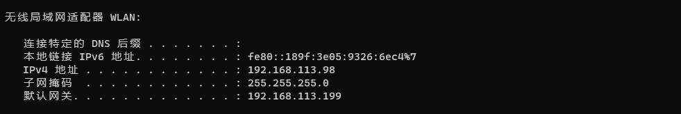
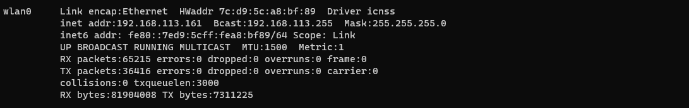
打开Burpsuite，设置监听为电脑IP+端口（192.168.113.98:9999）：
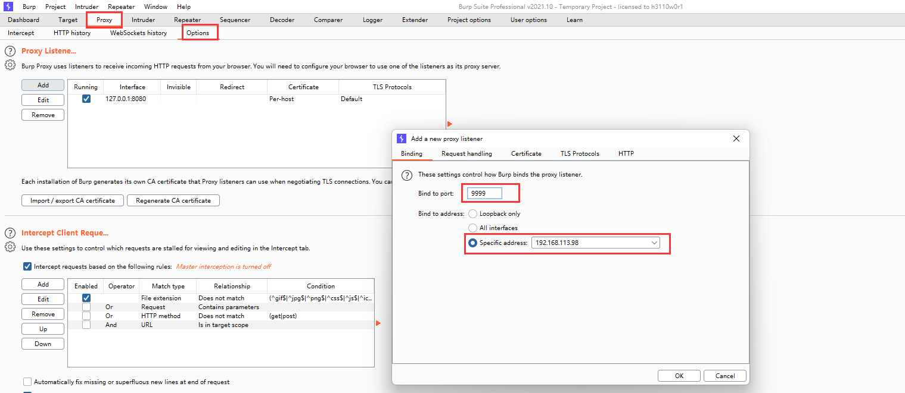
设置手机WIFI网络使用电脑192.168.113.98:9999代理，手机app的所有流量都走192.168.113.98:9999。流量走向为：APP=>wlan0(192.168.113.161)=>192.168.113.98:9999=>Burpsuite=>电脑=>外网：
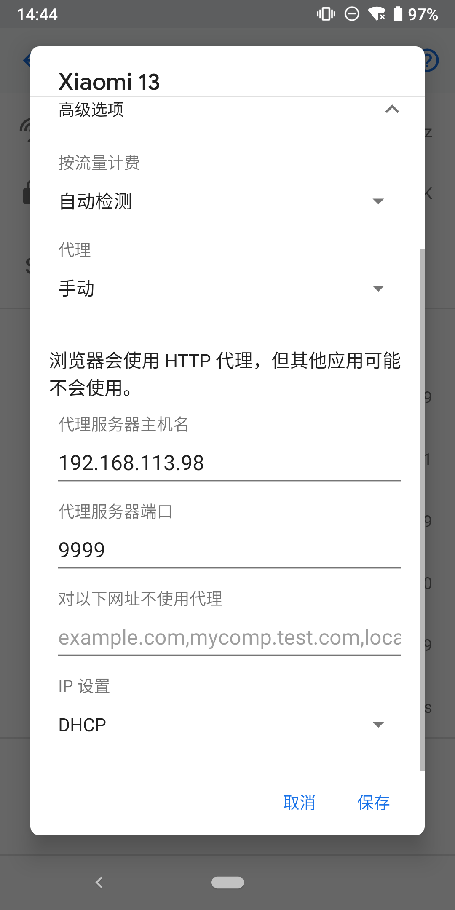
导入Burpsuite证书
抓包之前需要将Burpsuite的证书导入到手机中。在手机浏览器中输入 http://burp 即可下载CA证书，保存在SD卡中后可以在手机中选择安装：
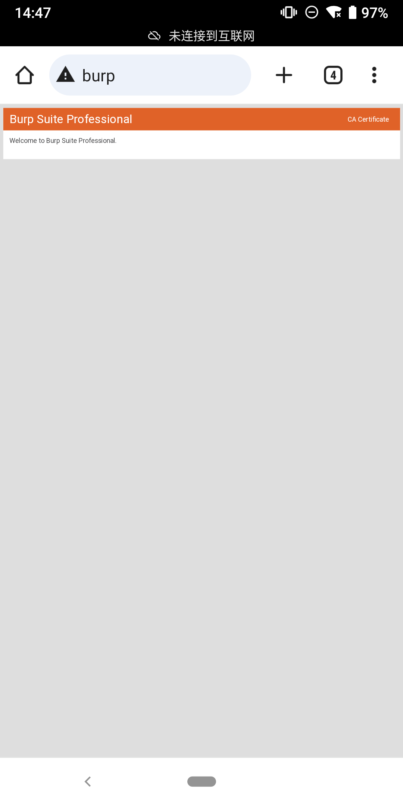
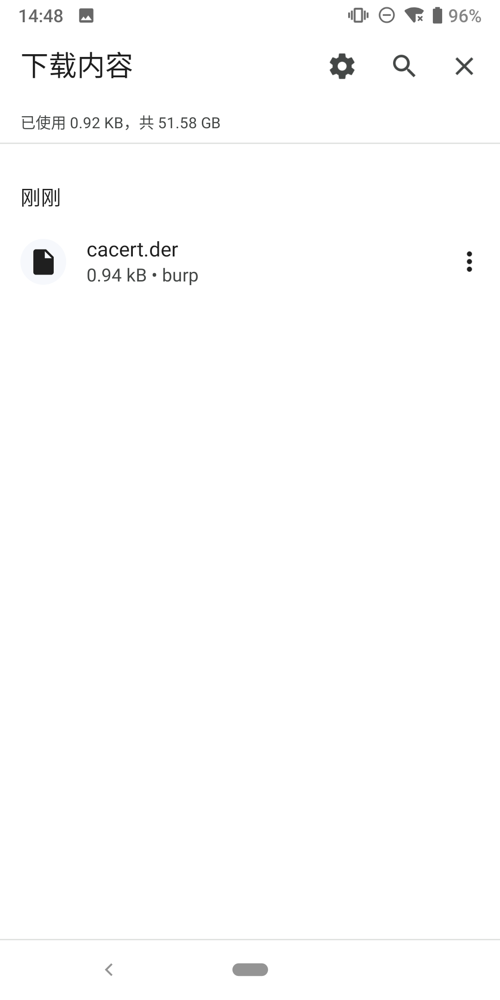
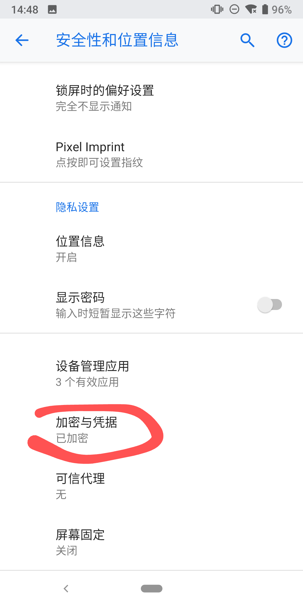
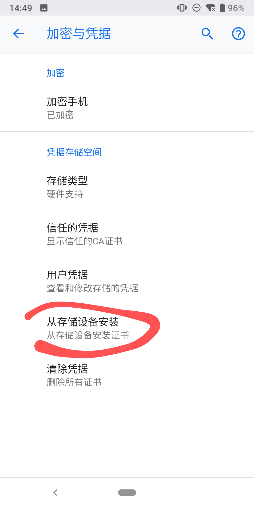
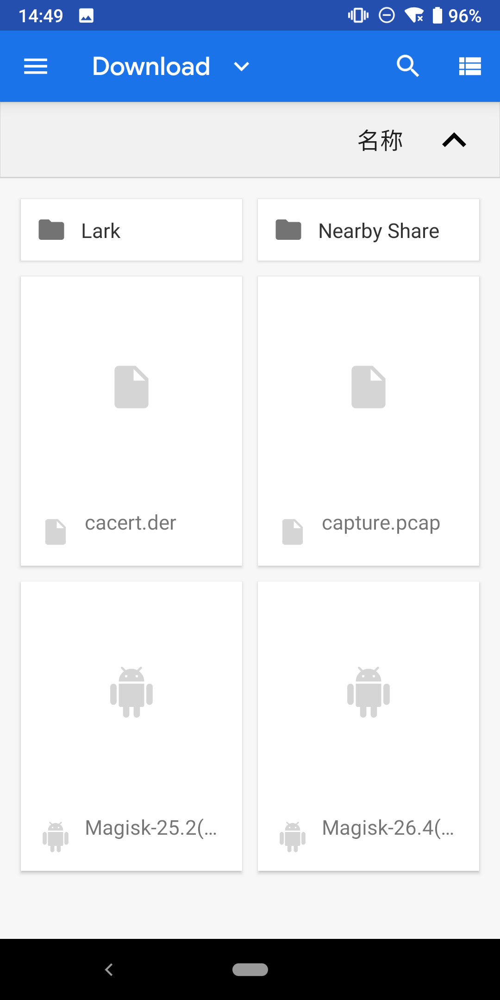
但是在最后安装证书的时候证书无法安装，导入时是灰色，不可选。在Android 9中，安装证书的方式和低版本有区别，不能直接安装，需要修改证书格式，并手动放置到证书目录中。参考：AOSP Android10导入BurpSuite CA证书抓包
在Burpsuite中导出证书，如果前面的步骤中手机没有浏览器，可以直接在Burpsuite中导出证书，然后adb push到手机上。
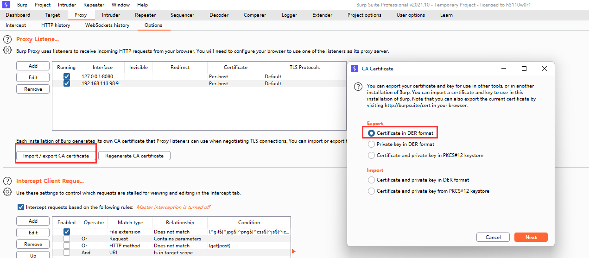
修改证书格式，并adb push到手机系统证书安装目录（/system/etc/security/cacerts）（openssl可以使用windows子系统wsl中的命令）：
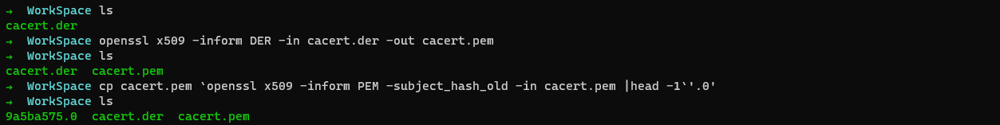
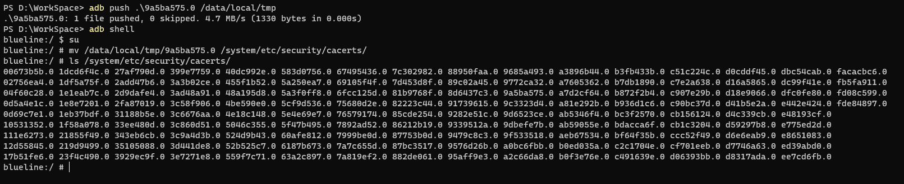
其中向/system/etc/security/cacerts写入文件时需要先执行 adb root & adb remount ，因为/system/etc/security/cacerts默认是只读的。如果执行有问题，可以参考笔者博客的《Notes》部分。
开始抓包
配置代理并导入证书之后，即可在Burpsuite中抓取到app https流量：
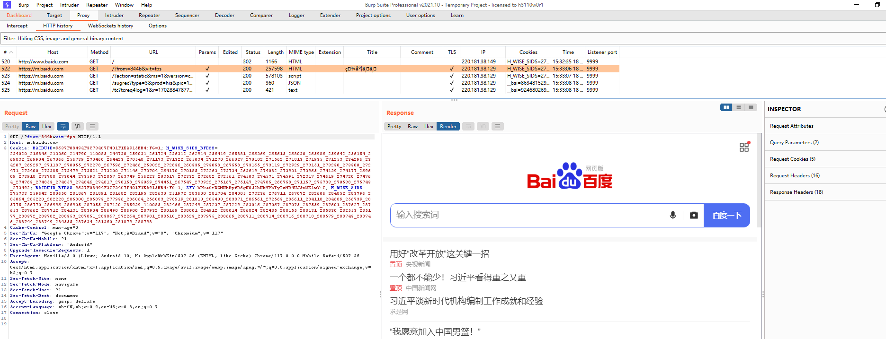
Tcpdump + Wireshark + Android 9(root)/车机(root)
1 | 环境：Pixel3 Android 9（已root） |
准备工作：
frida
tcpdump：https://www.androidtcpdump.com/android-tcpdump/downloads
tcpdump下载之后adb push到手机上，并chmod给其加上执行权限。
注：需要先开启抓包，然后再执行hook ssl key的脚本，确保在同一个SSL Session中，否则抓取的ssl key不能解密https数据包，因为重新启动APP，SSL Session会重新创建，会重新生成ssl key。
运行tcpdump开启抓包
1 | tcpdump -i any -s 0 -w /sdcard/Download/capture.pcap |
hook app获取ssl key
1 | // sslkeyfilelog.js |
1 | frida -U -l ./sslkeyfilelog.js -f cn.damai |
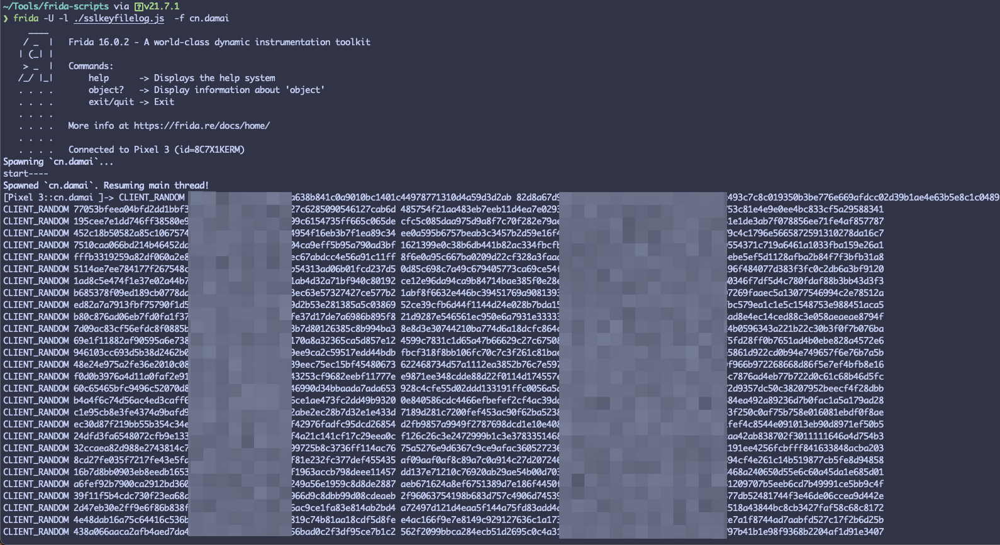
Wireshark 分析
adb pull 拉取抓取的数据包：
1 | adb pull /sdcard/Download/capture.pcap |
将frida脚本hook到的ssl key保存成文件sslkeys.txt，格式如下：
1 | CLIENT_RANDOM 90084f71abb9eb6009e0a638b841c0a9010bc1401c44978771310d4a59d3d2ab 82d8a67d90a89d50287b7002296a8b64d9cb0f29ec493c7c8c019350b3be776e669afdcc02d39b1ae4e63b5e8c1c0489 |
wireshark打开capture.pcap，采用如下过滤条件：
1 | (http.request or tls.handshake.type eq 1) and !(ssdp) and (tcp.port==443) |
可以看到wireshark无法解析https流量：
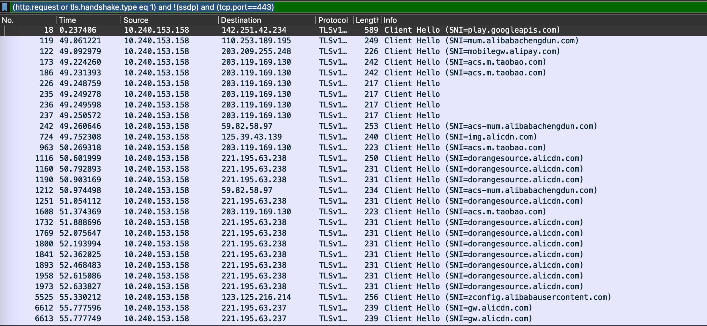
点击菜单栏：Wireshark=>Preferences=>Protocols=>TLS，导入sslkeys.txt文件：
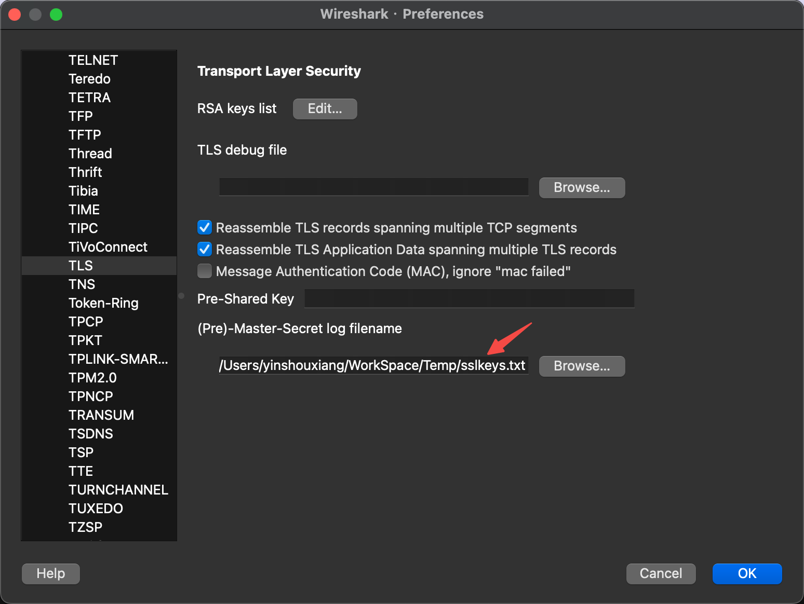
再次执行wireshark过滤条件，wireshark能解析https流量：
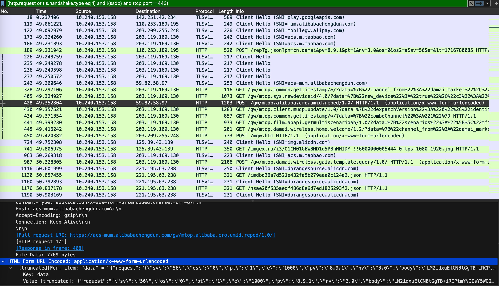
Frida Hook 抓包
1 | 环境：Pixel3 Android 9（已root） |
准备工作：
frida
在APP中，有一些常见的用于发起网络请求的API，也包括自定义的API接口，hook这些API函数，就能获取请求和响应的数据。
工具：